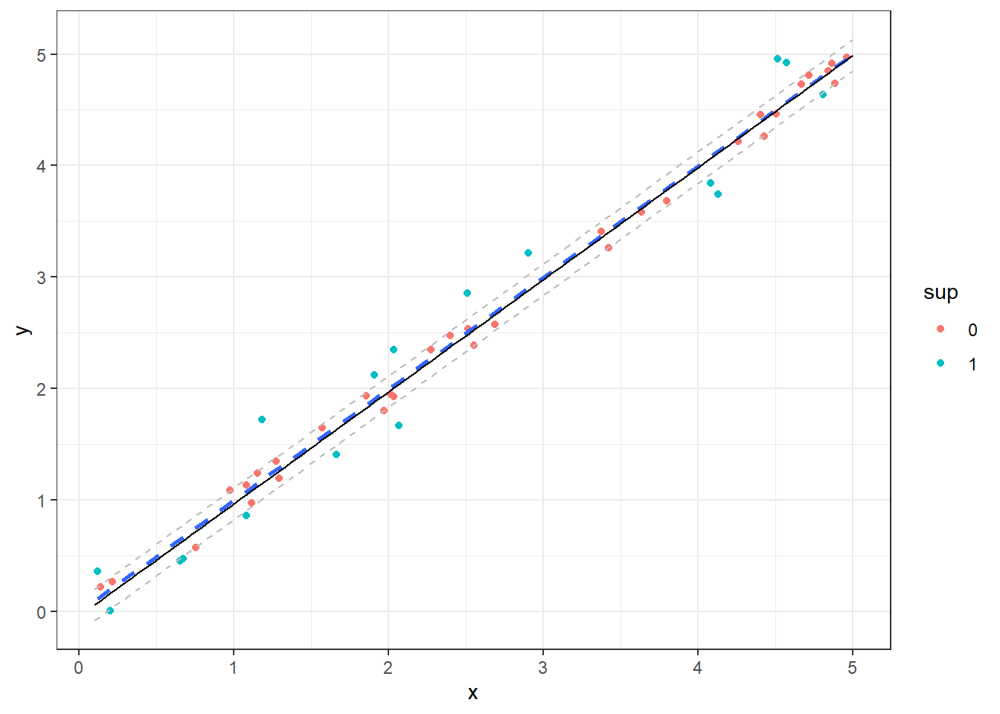
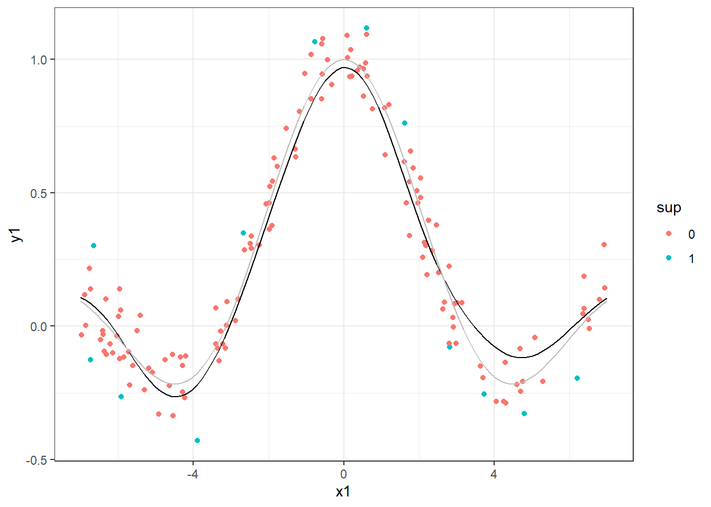
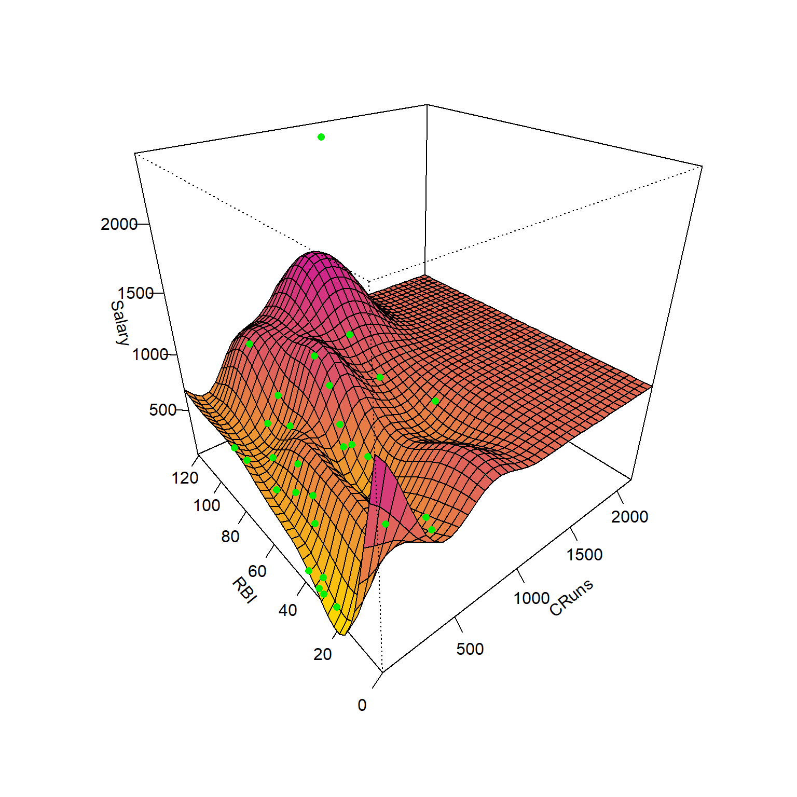

Regressão por vetores de suporte
Regressão por vetores de suporte
Drucker et al. (1996) propuseram as máquinas de vetores de suporte para regressão (Support Vector Regression - SVR), um método que confirma os conceitos da teoria de aprendizado estatístico de Vapnik (VAPNIK, 1999). O processo de aprendizado com SVR é realizado no espaço de um subconjunto dos dados de treinamento, chamados de vetores de suporte. Sejam os dados de treinamento \((\mathbf{x}_1, y_1), (\mathbf{x}_2, y_2), ..., (\mathbf{x}_N, y_N)\), \(i = 1, . .., N\), com \(\mathbf{x}_i = [x_{i1}, x_{i2}, ..., x_{ik}]^T\). O SVR busca uma função com desvio máximo \(\varepsilon\) para os dados de treinamento. A Figura a seguir ilustra à esquerda a função perda \(\varepsilon\)-insensitiva ou insensitiva ao erro, enquanto à direita ilustra-se a idéia geral da regressão por vetores de suporte para o caso linerar simples.
A linha central do modelo SVR consiste na linha de regressão, \(\hat{y}_i = \mathbf{x}_i^T \mathbf{w} + b\), enquanto as duas outras linhas paralelas e simétricas são chamadas de margens, \(\hat{y}_i = \mathbf{x}_i^T \mathbf{w} + b \pm \varepsilon\) e os pontos que coincidem ou estão para fora desta linha são chamados de vetores de suporte e apresentam valor na função perda maior ou igual a zero, \(\xi_i \geq 0\) para os vetores de suporte.
Seja um modelo linear, segundo a Equação a seguir:
\[ \begin{aligned} \hat{y}_i = \mathbf{x}_i^T \mathbf{w} + b,\text{ i = 1, ..., N} \end{aligned} \]
Para estimar os parâmetros deste modelo, pode-se otimizar uma função perda mais um termo de regularização, conforme a Equação a seguir, onde \(C\) é uma constante de regularização. Este problema é similar ao problema de regressão rígida. No entanto, a constante de regularização aqui multiplica a função perda, \(\sum_i L\), e não a soma dos quadrados dos termos do modelo, \(\mathbf{w}^T\mathbf{w}\).
\[ \begin{aligned} C\sum_{i=1}^N L(y_i, \hat{y}_i) + \mathbf{w}^T\mathbf{w} \end{aligned} \]
A função perda \(\varepsilon\)-insensitiva usada em SVR é apresentada a seguir, com \(\xi_i= \lvert y_i - \hat{y}_i \rvert - \varepsilon\).
\[ \begin{aligned} L = \Biggl\{ \begin{matrix} 0 \text{, se } \lvert y_i - \hat{y}_i \rvert < \varepsilon\\ \lvert y_i - \hat{y}_i \rvert - \varepsilon \text{, c.c.} \end{matrix} \end{aligned} \]
O problema primal de SVR pode ser expresso conforme a formulação a seguir (VAPNIK, 2013).
\[ \begin{aligned} \text{Min}\ \begin{Bmatrix} \frac{1}{2}\mathbf{w}^T\mathbf{w} + C\sum_{i=1}^N(\xi_i + \xi_i^*) \end{Bmatrix} \\ \textrm{s.t.: } \Biggl\{ \begin{matrix} y_i - [\mathbf{x}_i^T\mathbf{w} + b] \leq \varepsilon + \xi_i\\ [\mathbf{x}_i^T\mathbf{w} + b] - y_i \leq \varepsilon + \xi_i^* \\ \xi_i, \xi_i^* \geq 0 \end{matrix} \end{aligned} \]
Para resolver este problema mais facilmente, a formulação dual pode ser considerada. Além disso, a formulação dual permitirá a extensão da regressão do vetor de suporte para problemas não lineares. Porém, antes, é adequado apresentar a formulação lagrangeana para o problema SVR primal, conforme a formulação abaixo, onde \(\alpha_i\), \(\alpha_i^*\), \(\eta_i\) e \(\eta_i^*\) são os multiplicadores de Lagrange, que devem ser não-negativos (VAPNIK, 1999; 2013).
\[ \begin{split} L = \frac{1}{2}\mathbf{w}^T\mathbf{w} + C\sum_{i=1}^N(\xi_i + \xi_i^*) - \sum_{i=1}^N \alpha_i(\varepsilon + \xi_i - y_i + \mathbf{x}_i^T\mathbf{w} + b) \\ - \sum_{i=1}^N \alpha_i^*(\varepsilon + \xi_i^* - \mathbf{x}_i^T\mathbf{w} - b + y_i) -\sum_{i=1}^N(\eta_i\xi_i + \eta_i^*\xi_i^*) \end{split} \]
Derivando a função Lagrangeana em relação às variáveis do problema primal, \(\mathbf{w}\), \(b\), \(\xi_i\) e \(\xi_i^*\), e igualando a zero, as condições de otimalidade de primeira ordem são obtidas conforme segue (SMOLA e BERNHARD, 2004).
\[ \begin{aligned} &\frac{\partial L}{\partial b} = \sum_{i=1}^N(\alpha_i + \alpha_i^*) = 0 \\ &\frac{\partial L}{\partial \mathbf{w}} = \mathbf{w} - \sum_{i=1}^N(\alpha_i + \alpha_i^*)\mathbf{x}_i = 0 \\ &\frac{\partial L}{\partial \xi_i} = C - \alpha_i - \eta_i = 0 \\ &\frac{\partial L}{\partial \xi_i^*} = C - \alpha_i^* - \eta_i^* = 0 \\ \end{aligned} \]
Substituindo os resultados das derivadas na formulação primal, obtém-se a formulação dual do problema de SVR, conforme segue (VAPNIK, 1999; DRUCKER, 1996; SMOLA e BERNHARD, 2004).
\[ \begin{aligned} \text{Max}\ &\begin{Bmatrix} -\frac{1}{2}\sum_{i,j}^N(\alpha_i - \alpha_i^*)(\alpha_j - \alpha_j^*)\mathbf{x}_i\mathbf{x}_j \\ -\varepsilon\sum_{i=1}^N(\alpha_i - \alpha_i^*) + \sum_{i=1}^N y_i(\alpha_i - \alpha_i^*) \end{Bmatrix}\\ \textrm{s.t.: } \Biggl\{ &\begin{matrix} \sum_{i=1}^N(\alpha_i - \alpha_i^*) = 0\\ \alpha_i, \alpha_i^* \in [0,C] \\ \end{matrix} \end{aligned} \]
Nesta formulação dual, \(\mathbf{w}\) é reescrito como uma combinação linear das observações de treinamento, \(\mathbf{x}_i\mathbf{x}_j\). Na formulação dual, \(\eta_i\) e \(\eta_i^*\) foram descritos em função de \(C\), \(\alpha_i\) e \(\alpha_i^*\), sendo esses eliminados. Além disso, \(\mathbf{w} = \sum_{i=1}^N(\alpha_i + \alpha_i^*)\mathbf{x}_i\). Na regressão por vetores de suporte, o modelo inicial apresentado na Equação \(\ref{eq:lin_func}\) é reescrito como combinações lineares dos dados de treinamento, segundo o modelo a seguir. No entanto, o modelo inclui apenas os vetores de suporte, ou seja, \(\mathbf{x}_i\) tal que \(\alpha_i > 0\) ou \(\alpha_i^* > 0\), \(i = 1, ..., N\), com \(\xi_i\) definindo a folga ou erro para além da margem. A SVR aumenta a dimensionalidade no espaço dos vetores de suporte ao invés do espaço dos preditores (VAPNIK, 2013).
\[ \hat{y} = \sum_{i=1}^N(\alpha_i - \alpha_i^*)\mathbf{x}_i\mathbf{x} + b \]
O modelo SVR depende apenas do produto escalar dos dados de treinamento, \(\mathbf{x}_i\). Para aproximar funções mais complexas, o produto escalar \(\mathbf{x}_i\mathbf{x}_j\) pode ser substituído por um kernel, \(k(\mathbf{x}_i,\mathbf{x}_j)\). Algumas opções incluem o kernel linear, \(k(\mathbf{x}_i,\mathbf{x}_j) = \mathbf{x}_i\mathbf{x}_j\), o polinomial, \(k(\mathbf{x }_i,\mathbf{x}_j) = (\mathbf{x}_i\mathbf{x}_j + c)^d\), e o kernel de base radial, \(k(\mathbf{x}_i,\mathbf{x }_j) = \exp(-\gamma||\mathbf{x}_i - \mathbf{x}_j||^2)\). Portanto, o modelo SVR final pode ser expresso conforme a Equação abaixo. De acordo com o kernel selecionado, os hiperparâmetros \(\varepsilon\), \(C\) e outros relativos ao kernel devem ser escolhidos por validação cruzada e grid search.
\[ \hat{y} = \sum_{i=1}^N(\alpha_i - \alpha_i^*)k(\mathbf{x}_i,\mathbf{x}) + b \]
A seguir plota-se um modelo SVR para um caso de regressão simples, sendo utilizado um kernel linear. Pode-se destacar em verde as observações que são vetores de suporte.
Setting default kernel parameters 
Outros casos mais complexos como o seguinte podem ser aproximados por SVR com a aplicação do kernel adequado. No exemplo a seguir foi utilizado um kernel radial.

A regressão por vetores de suporte podem ser aplicados a casos multidimensionais. A seguir ilustra-se um modelo de SVR aplicado aos dados da liga maior americana de Baseball para as temporadas de 1986 e 1987, considerando apenas duas das 19 variáveis preditoras disponíveis. Os dados plotados em verde são vetores de suporte.

Independente do caso é importante lembrar de se utilizar de validação cruzada e grid search para definir os níveis adequados dos hiperparâmetros \(\varepsilon\), \(C\), tipo de kernel e outros hiperparâmetros relacionados ao kernel adequado a cada caso.
Referências
Drucker, H., Burges, C. J., Kaufman, L., Smola, A., & Vapnik, V. (1996). Support vector regression machines. Advances in neural information processing systems, 9.
Smola, Alex J., and Bernhard Schölkopf. “A tutorial on support vector regression.” Statistics and computing 14 (2004): 199-222.
Vapnik, V. N. (1999). An overview of statistical learning theory. IEEE transactions on neural networks, 10(5), 988-999.
Vapnik, V. (2013). The nature of statistical learning theory. Springer science & business media.